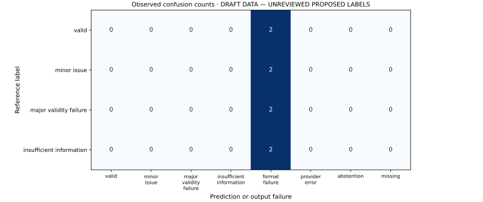
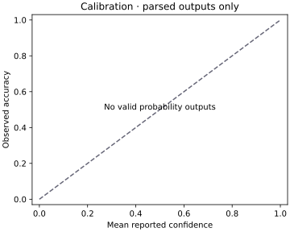

CHEMICAL EXPERIMENTAL VALIDITY
DRAFT DATA — UNREVIEWED PROPOSED LABELS
Observed software smoke results are not a validated chemistry ranking.
Model: qwen2.5:0.5b · Condition: model_only
8 tasks in 2 connected family clusters.
| Metric | Estimate | Denominator | 95% cluster interval |
|---|---|---|---|
| macro f1 | 0.000 | 4 labels; 8 tasks | [0.0, 0.0] |
| major failure recall | 0.000 | 0 / 2 | [0.0, 0.0] |
| false acceptance rate | 0.000 | 0 / 2 | [0.0, 0.0] |
| missed major failure rate | 1.000 | 2 / 2 | [1.0, 1.0] |
| format failure rate | 1.000 | 8 / 8 | Not estimable |
Macro-F1 averages all four labels. Invalid, missing and abstained outputs receive no classification credit. A null interval denotes insufficient clusters or an undefined resampled denominator.

| Reference | valid | minor_issue | major_validity_failure | insufficient_information | format_failure | provider_error | abstention | missing |
|---|---|---|---|---|---|---|---|---|
| valid | 0 | 0 | 0 | 0 | 2 | 0 | 0 | 0 |
| minor_issue | 0 | 0 | 0 | 0 | 2 | 0 | 0 | 0 |
| major_validity_failure | 0 | 0 | 0 | 0 | 2 | 0 | 0 | 0 |
| insufficient_information | 0 | 0 | 0 | 0 | 2 | 0 | 0 | 0 |

Brier score (parsed outputs): {'value': None, 'denominator': 0}. Failure-penalized Brier: {'value': 2.0, 'denominator': 8, 'failure_penalty': 2}.
{
"oracle_structural_success": {
"value": 0.0,
"numerator": 0,
"denominator": 2
},
"end_to_end_structural_success": {
"value": 0.0,
"numerator": 0,
"denominator": 2
},
"oracle_coverage": {
"value": 1.0,
"numerator": 2,
"denominator": 2
},
"oracle_human_explanation_accuracy": {
"value": null,
"numerator": 0,
"denominator": 0
},
"end_to_end_human_explanation_accuracy_subset": {
"value": null,
"numerator": 0,
"denominator": 0
},
"note": "Code/span success is a structural proxy, not verified explanation correctness. Human fields stay empty until actual blind assessment."
}
Human explanation accuracy is reported only for actual independently assessed explanations with consensus. A zero denominator means no such assessment is available. Correct issue codes and quote overlap alone are structural proxies.
{
"input_tokens": 10568,
"output_tokens": 5074,
"known_cost_usd": null,
"elapsed_seconds": 265.35287774800236,
"requests": 10,
"transport_attempts": 10
}
Sampling intervals do not represent all uncertainty in annotation, contamination, model sampling or generalization. Small pilot results should guide curation, not competitive claims.
Run fingerprint: cd2953eab76d469e1385dbd536496601f4141b2f6aad87b90e00f8b3e338a948
Raw requests, responses, failure records and checksums are retained in the private run bundle.